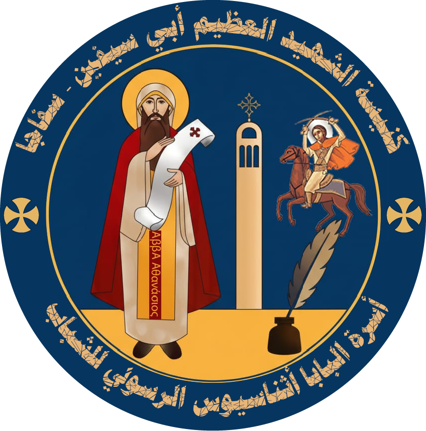

لوجو الأسرة — تجربة التحويل لفيكتور
من أكبر نسخة أصلية في المشروع (tools/source/logo.png، ٨٤٨ × ٨٥٨). كل شكل متتبَّع من البكسلات نفسها، من غير ما يترسم حاجة من جديد ولا يتغير لون. اتعمل بسكريبت على الجهاز (w1/tools/vectorize-family.mjs)، ومفيش أي برنامج اتنزّل. لسه مش معتمد ولا متركّب في اللوجو ب: مستني قرارك.

الملف: family-logo.svgz (SVG مضغوط، ≈ ٦ ميجا، Illustrator بيفتحه على طول). ٥٦ لون مسطّح، كل لون مسار واحد باسمه (c01 … c56)، وكل لون بيغطي اللي فوقه علشان مفيش فتحات بينهم.